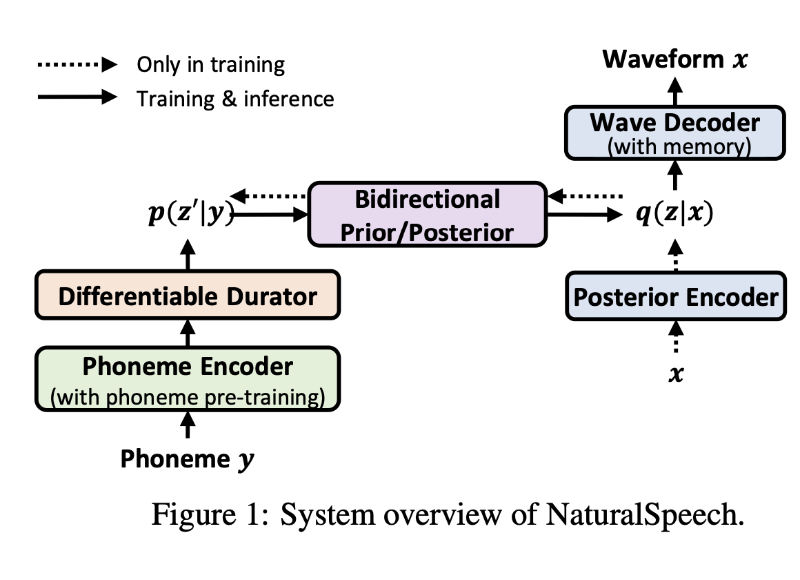
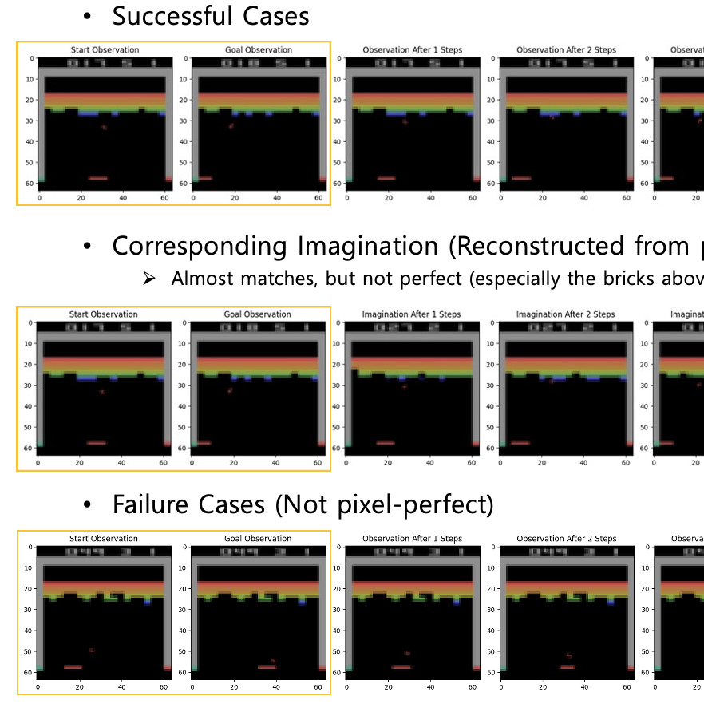
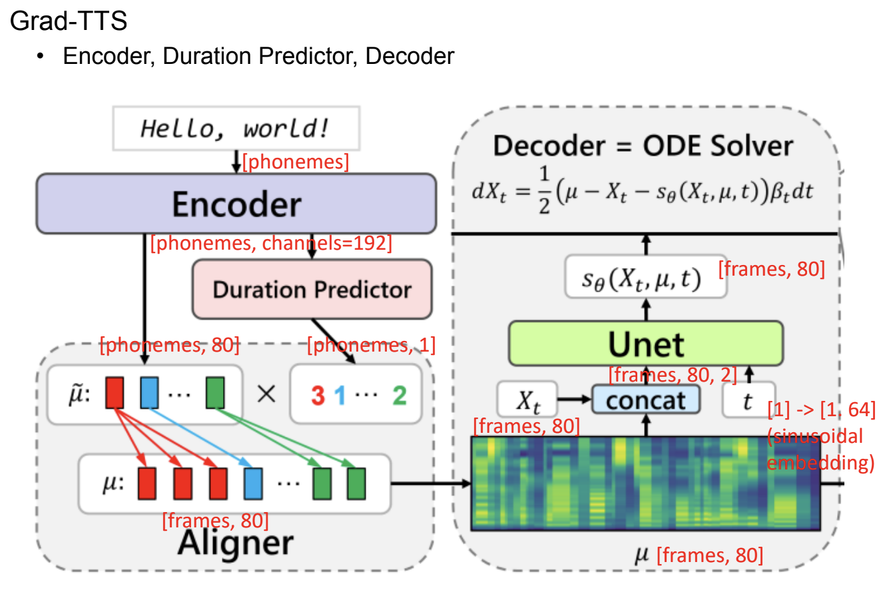
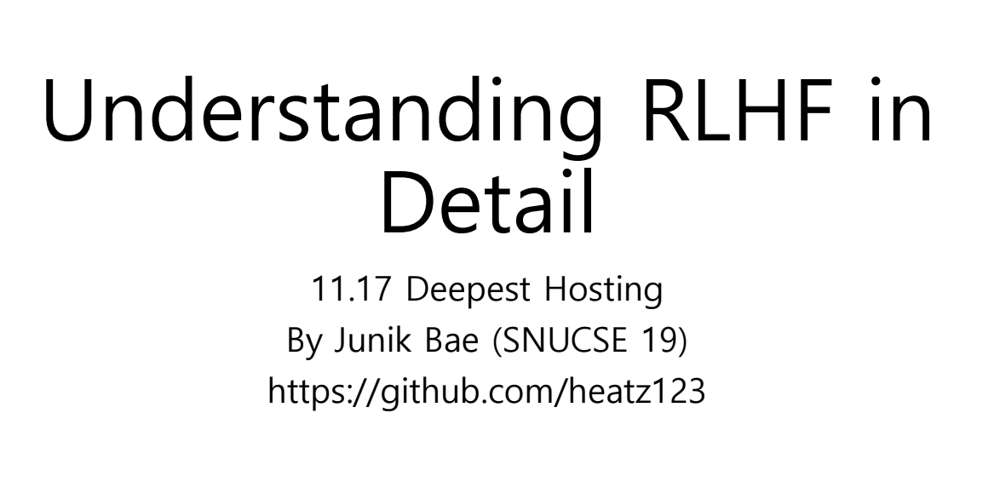
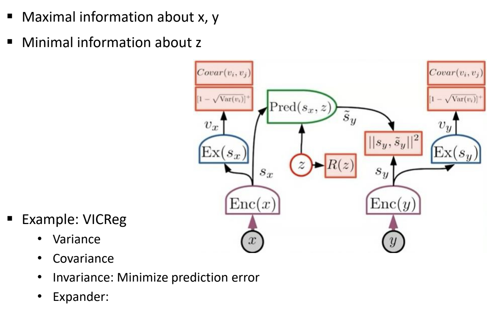

|
Junik Bae
I'm an undergraduate student in Seoul National University majoring in Computer Science and Engineering.
Currently, I am engaged as an intern in Prof. Youngwoon's lab focusing on Model-based RL research projects.
My ambition is to develop innovative models that enhance decision-making processes and contribute novel insights and knowledge to mankind.
In the past, I served in Korean Air Force, specializing in deep learning model development. After that, I joined Naver Cloud Speech team as a research intern.
During my undergraduate studies, I was involved in an undergraduate research program at Language and Data Intelligence Lab, focusing on Natural Language Understanding for code refinement.
Also, I worked as a lab intern at SNU Vision and Learning Lab, studying Retrieval augmented generation in NLP.
Email /
CV /
Github
|
|
Research and Projects
My interests span various fields including computer vision, machine learning, speech recognition, text-to-speech. At present, my primary focus is on Model-based Reinforcement Learning.
|
|
|
2022 Korean AI Competition
2nd Place, Awarded by Korean Minister of Science and Technology: 10,000,000 KRW.
Developed a model targeting the tasks of Korean Free-chat, Command-chat and Dialect-chat recognition using a
variant of wav2vec model. Implemented Transformer LM beam-search decoder for the inference, enabling it to consider long-range contextual information effectively.
|
|
|
2022 Military AI Competition
1st Place, Awarded by Korean Minister of Science and Technology: 20,000,000 KRW
Developed a model for Change Segmentation and Image Denoising tasks, utilizing a variant of U-Net model and several engineering techniques for the tasks.
|
|

|
NaturalSpeech Implementation
(400 stars) Implemented Microsoft’s NaturalSpeech: End-to-End Text to
Speech Synthesis with Human-Level Quality, which was a SOTA for the LJ Speech Dataset.
|
|

|
Goal Conditioned Trajectory Generation
with Autoregressive Transformer
Implemented goal conditioned learning to transformer world-model-based agents, and tested with Atari Breakout. Empirically showed that the generative ability of transformer decoder models can be utilized to generate goal-conditioned trajectories.
Final project for Data Science and Reinforcement Learning Course (2023-1).
|
|
 |
Denoising Diffusion Models and its applications to TTS
Delivered a comprehensive 5-week seminar series on Diffusion Models to the research team members in in Naver Cloud Voice Team. This series provided a theoretical explanation of Diffusion Models and an in-depth look at the practical applications in Text-to-Speech domain.
|
|
 |
Understanding RLHF in Detail
Hosted a presentation titled ’Understanding RLHF in Detail’ at Deepest (SNU Deep Learning Research Club), providing an in-depth explanation of Proximal Policy Optimization (PPO) with preferences datasets and Direct Policy Optimization (DPO).
|
|

|
A Path Towards Autonomous AI
Hosted a presentation titled 'A Path Towards Autonomous AI' at Deepest (SNU Deep Learning Research Club), which explains motivations for Joint-Embedding Predictive Archiecture proposed by Yann Lecun, and some recent works utilizing this architecture.
|
|
{kind=link}